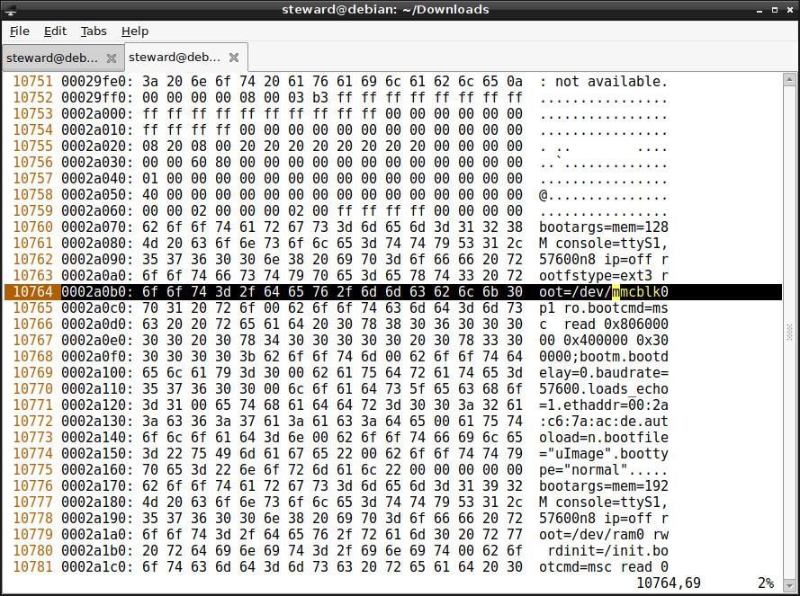

如果使用者想要從外部MicroSD(GBA卡匣)載入rootfs系統，只要修改U-Boot參數就可以，方式如下所示：

$ sudo dd if=/dev/mmcblk0 of=head.img bs=1M count=8 $ sed -i 's/mmcblk0p1/mmcblk1p1/g' head.img $ sudo dd if=head.img of=/dev/mmcblk0
P.S. U-Boot和Kernel還是需要從內部的那張MicroSD啟動，只是rootfs改成從GBA卡匣的MicroSD載入